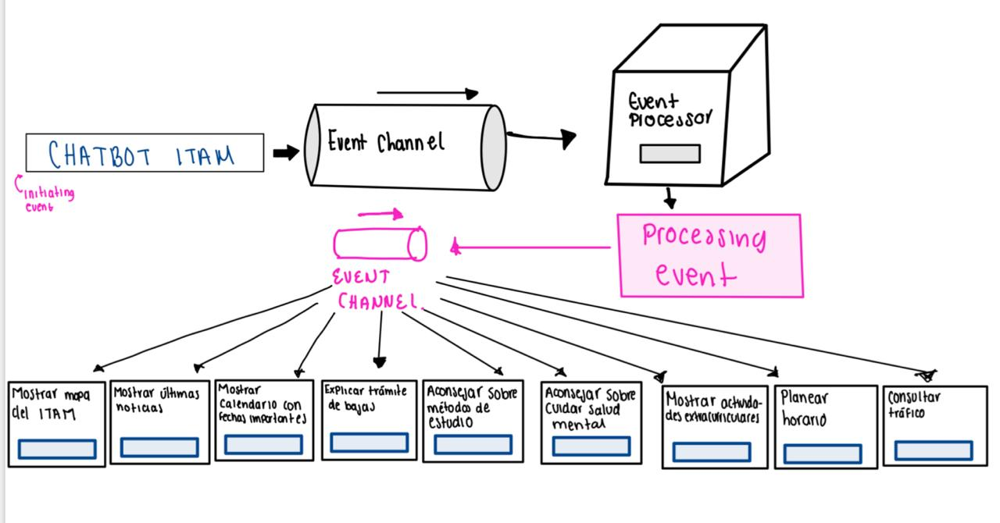

2. Diagrama de casos de uso
Diagrama que representa los casos de uso principales del sistema y su relación con el actor Estudiante.

Este proyecto consiste en el desarrollo de un chatbot diseñado para apoyar al alumnado del ITAM en la navegación del semestre. El sistema proporciona información institucional, orientación académica y datos contextuales relevantes con el objetivo de facilitar la gestión y organización del semestre.
Equipo de trabajo:
Nicolás Robles
Evelyn Reséndiz
Eduardo Turriza
Diego Román
Diagrama que describe la arquitectura general del sistema y la interacción entre sus componentes principales.
Diagrama que representa los casos de uso principales del sistema y su relación con el actor Estudiante.
Diagrama que muestra el flujo conversacional del chatbot y las opciones disponibles para el usuario.

El chatbot está implementado en una plataforma externa y se accede mediante el enlace anterior.